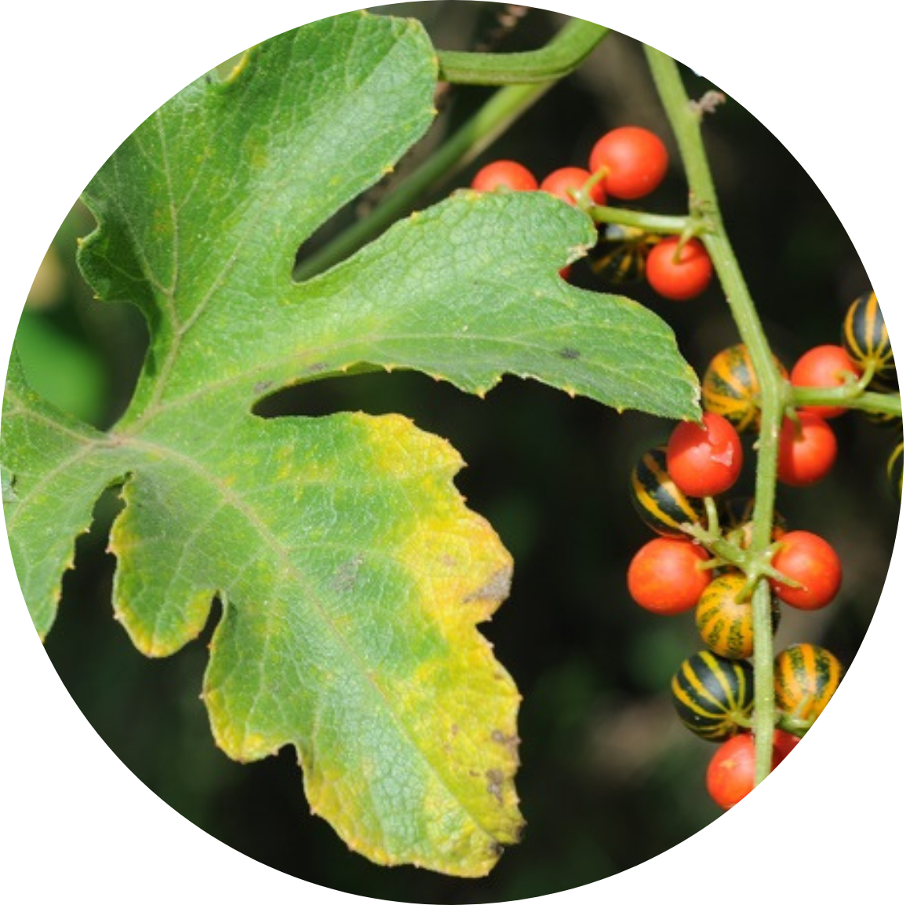
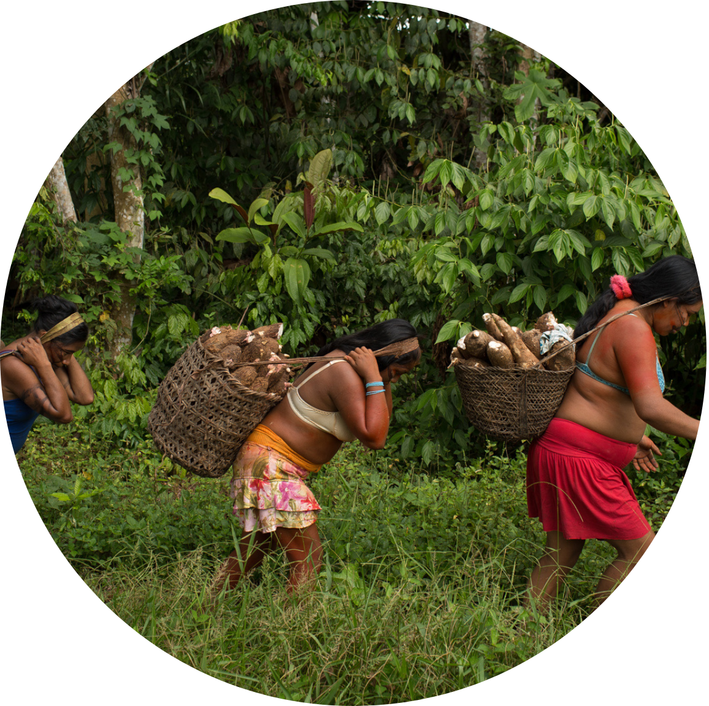

1700- 1750
Início séc XVII
Descoberta do ouro em Goiás atraiu mineradores, bandeirantes e missionários. Povos indígenas sofreram pressões, ataques e epidemias. Grupos como os Xavantes foram forçados a viver em aldeamentos governamentais.
Os Xavantes são um povo indígena brasileiro da família linguística Jê, que vive principalmente no estado do Mato Grosso. Com uma história marcada por migrações forçadas, separação dos Xerente e lutas por território, os Xavantes se destacam por sua forte resistência cultural e política.
Desde o século XVIII, enfrentaram a pressão de bandeirantes, missionários e, mais tarde, do Estado brasileiro, especialmente durante a “Marcha para o Oeste”, quando foram retratados como símbolos do “interior a ser conquistado”. Apesar disso, mantiveram suas tradições e lutaram pela demarcação de suas terras, obtendo importantes vitórias nas décadas de 1980 e 1990.
Além da resistência, os Xavantes contribuem para a sociedade com seu vasto conhecimento sobre o cerrado, incluindo o uso de plantas medicinais, uma alimentação baseada em recursos naturais e práticas sustentáveis de manejo ambiental. Hoje, continuam defendendo sua cultura, seus direitos e seu território.
Em 2020, os Xavante somavam cerca de 22.256 pessoas, vivendo em diversas Terras Indígenas que fazem parte de seu antigo território, ocupado há pelo menos 180 anos. Esse território fica no leste de Mato Grosso, abrangendo a Serra do Roncador e os vales dos rios das Mortes, Kuluene, Couto de Magalhães, Batovi e Garças.
A maioria das Terras Indígenas Xavante não são contínuas entre si, exceto Chão Preto e Ubawawe
Já a biodiversidade da região é essencial para seu modo de vida, mas enfrenta impactos ambientais desde a década de 1960, intensificados nos anos 1980 com a expansão da agropecuária e da produção de grãos para exportação, especialmente soja.
O povo indígena Xavante pertence ao tronco linguístico Macro-Jê, dentro da família Jê. Sua língua, conhecida como akwén ou aquém (também escrita como “acuen”), possui um sistema fonético composto por 13 consoantes e 13 vogais, sendo quatro delas nasais.
A estrutura linguística Xavante reflete relações de respeito e afeto, especialmente com parentes por afinidade e netos. Esse respeito se manifesta inclusive na gramática da língua no uso da terceira pessoa em vez da segunda ao se dirigir ao genro, demonstrando um traço cultural distintivo.
A história dos Xavantes é marcada por resistência, migrações forçadas, e luta por reconhecimento. Mesmo diante de deslocamentos, contato violento com o Estado e perda de terras, conseguiram importantes vitórias territoriais e culturais, preservando tradições e identidade até os dias atuais.
1700- 1750
Descoberta do ouro em Goiás atraiu mineradores, bandeirantes e missionários. Povos indígenas sofreram pressões, ataques e epidemias. Grupos como os Xavantes foram forçados a viver em aldeamentos governamentais.
1790-1810
Antepassados dos Xavantes cruzam o rio Araguaia, separando-se dos Xerente. Xavantes seguem para a região da Serra do Roncador (MT) e fundam o povoado de Tsõrepre. Começam migrações internas em direção aos rios das Mortes, Suiá-Missu e Kuluene.
1800-1930
Xavantes vivem em relativo isolamento e liberdade das pressões da sociedade nacional. Grupos espalham-se por diversas áreas do Mato Grosso
1930 - 1940
Durante o governo Vargas, a "Marcha para o Oeste" promove ocupação do interior. Xavantes são retratados como "bons selvagens" pela mídia, integrados à propaganda nacionalista. Primeiros conflitos armados: mortes de dois padres (1932) e da equipe de Pimentel Barbosa (1941) por resistência indígena
1946
Primeiro contato pacífico com grupo liderado por Apöena, promovido por Francisco Meirelles. Estado e mídia celebram o evento, promovendo uma imagem heroica dos Xavantes.
1950-1970
Grupos xavante começam a aceitar relações pacíficas, motivados por doenças, fome e conflitos. Muitos buscam ajuda em postos do SPI ou missões religiosas. Expansão agrícola no cerrado com apoio de incentivos fiscais. Terras tradicionais xavante são ocupadas por fazendeiros e colonos. Desmatamento para criação de gado e monocultura (arroz, soja) se intensifica
1970-1980
Intensificação das lutas pela recuperação e demarcação das terras. Xavantes retornam às terras de origem, mas enfrentam ocupações e violência. Desenvolvem estratégias políticas e pressionam o Estado
1981
Reconhecimento oficial de seis terras indígenas: Areões, Pimentel Barbosa, São Marcos, Sangradouro, Marechal Rondon e Parabubure
1990
Novas vitórias: demarcação de Marawãitsede e outras áreas. Consolidação de seu papel como povo resistente, defensor de sua cultura e território
A cultura Xavante é rica em tradições que refletem sua visão de mundo, organização social e espiritualidade. Entre os rituais mais marcantes estão o Ritual de Furo de Orelha (Danhono), que simboliza a transição para a vida adulta, e o Ritual Darini, que marca o início da jornada espiritual dos jovens. Além dessas práticas, a estrutura social Xavante é fortemente baseada no Sistema de Categorias de Idade, no qual grupos etários desempenham funções distintas ao longo da vida, e na divisão em clãs complementares, que reforçam laços comunitários e ajudam a manter a identidade cultural da tribo. Essas tradições desempenham um papel fundamental na preservação dos valores e na conexão entre gerações.
Ritual de Furo de Orelha (Danhono): Esse ritual marca a passagem da adolescência para a vida adulta. Os jovens meninos passam por um período de reclusão de cinco anos, onde vivem em uma casa chamada Hö, sem contato com a tribo, apenas com seus padrinhos. Após esse período, ocorre uma grande festa na aldeia, onde suas orelhas são furadas com um osso de onça parda.
Ritual Darini: Esse rito simboliza o início da vida espiritual dos jovens nas aldeias. Ele é realizado em diversas Terras Indígenas e envolve a participação de milhares de indígenas. Além de reforçar a identidade cultural, o ritual fortalece os laços sociais entre jovens e anciãos.
Sistema de Categorias de Idade: A sociedade Xavante é organizada em grupos etários, que desempenham papéis específicos ao longo da vida. Esses grupos são formados por pessoas de idades semelhantes e têm responsabilidades e funções sociais distintas. Cada indivíduo passa por rituais de transição ao mudar de uma categoria para outra, marcando diferentes fases da vida, como infância, juventude, maturidade e velhice.
Clãs e Complementaridade: Os Xavante se dividem em dois clãs principais: Owawã (Rio Grande) e Poreza’õno (Girino). Esses clãs são complementares e competem entre si em algumas ocasiões, como nos rituais e cerimônias. O pertencimento a um clã é determinado pelo pai, e os casamentos ocorrem entre membros de clãs diferentes, reforçando a coesão social.
Os Xavantes, um dos povos indígenas do Brasil, são conhecidos por possuir um vasto conhecimento tradicional, principalmente sobre medicina tradicional, alimentação, e manejo ambiental, práticas que, ao longo do tempo, foram adotadas ou reconhecidas pela sociedade brasileira moderna.
Veja mais sobre como essas práticas influenciaram a medicina, a alimentação e a sustentabilidade no Brasil, com base em diversas fontes de pesquisa.
1. Medicina Tradicional: Eles utilizam plantas medicinais, como cayaponia, cabeludinha e jatobá, no tratamento de doenças. Esses saberes, transmitidos oralmente, vêm sendo estudados pela medicina moderna por suas propriedades anti-inflamatórias, antioxidantes e antibacterianas.
2. Alimentação Tradicional: A dieta Xavante, baseada em alimentos nativos do cerrado, influenciou a culinária brasileira, com destaque para o uso da mandioca, peixes de couro e frutas como o pequi. Além da caça e coleta, eles cultivam milho, feijão, abóbora e mandioca, embora a introdução de alimentos industrializados tenha alterado a alimentação dos jovens.
3. Sustentabilidade e Manejo Ambiental: Os Xavantes praticam agricultura diversificada e queima controlada, técnica tradicional de manejo do solo, que hoje é estudada por sua contribuição à agricultura sustentável. Seu modo de vida promove o uso equilibrado dos recursos naturais.
4. Conexão entre Terra e Saúde: Para os Xavantes, saúde está ligada ao acesso à terra e à manutenção de práticas tradicionais, como a vida nômade e a dieta baseada na diversidade dos recursos naturais. Esses saberes, além de fundamentais para a sobrevivência e identidade cultural Xavante, também inspiram modelos de sustentabilidade e saúde valorizados pela sociedade brasileira atual.
O Brasil, desde sua formação, tem historicamente reprimido e explorado os povos indígenas, realidade que persiste até hoje, afetando especialmente os Xavante. Vivendo em regiões de rica biodiversidade, eles enfrentam atualmente graves impactos ambientais causados pela agropecuária extensiva e pelo cultivo de grãos, especialmente soja. Isso resultou na degradação de seus territórios, perda de fauna para caça e ruptura de práticas culturais tradicionais, como as cerimônias de casamento.
A mudança para o sedentarismo, aliada à poluição das águas e à introdução de materiais não biodegradáveis, trouxe problemas sanitários e de saúde pública, como desnutrição, diabetes, alcoolismo e tuberculose. O atendimento de saúde aos Xavante é precário, com poucos recursos, discriminação nos serviços públicos e ausência de políticas preventivas.
Apesar disso, os Xavante têm demonstrado força política e perseverança na luta por seus direitos, especialmente pela demarcação de terras e por melhores condições de vida. Desde os anos 1980, criaram associações civis para receber apoio e desenvolver projetos em educação, saúde, nutrição, geração de renda e preservação do cerrado.
hxgashgasdcsgd.
Thafany
Isabely
Ana Julia
Lauren
Ana Carol